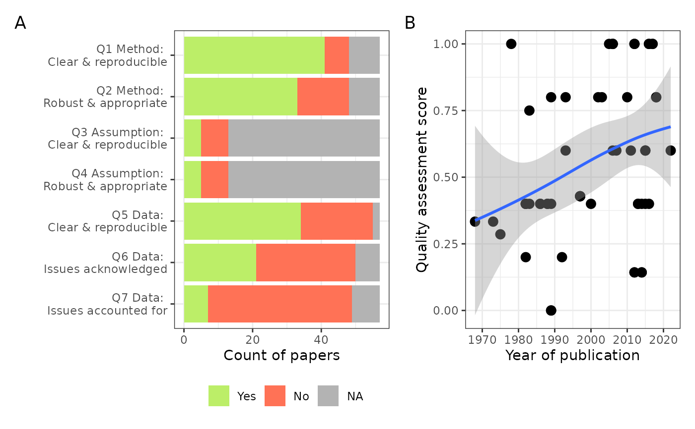

Plots for the quality assessment (QA) of the included studies
Source:R/quality_assessment.R
quality_assessment_plots.RdPlots for the quality assessment (QA) of the included studies
Examples
quality_assessment_plots(pathogen = "marburg")
#> Rows: 58 Columns: 25
#> ── Column specification ────────────────────────────────────────────────────────
#> Delimiter: ","
#> chr (8): pathogen, first_author_first_name, article_title, doi, journal, no...
#> dbl (16): article_id, covidence_id, year_publication, volume, issue, page_fi...
#> lgl (1): paper_copy_only
#>
#> ℹ Use `spec()` to retrieve the full column specification for this data.
#> ℹ Specify the column types or set `show_col_types = FALSE` to quiet this message.
#> `geom_smooth()` using method = 'loess' and formula = 'y ~ x'
#> Warning: Removed 2 rows containing non-finite outside the scale range (`stat_smooth()`).
#> Warning: Removed 2 rows containing missing values or values outside the scale range
#> (`geom_point()`).
